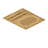

森罗物语：厨房 Kaleidoscope Cookery
共 195 个条目 · kaleidoscope_cookery
版本: 1.4.1-neoforge+mc1.21.1 · 来源: kaleidoscopecookery-1.4.1-neoforge+mc1.21.1.jar
A Minecraft mod that adds immersive cooking systems and delicious recipes to enhance your culinary adventure.
MC百科中文名: 森罗物语：厨房
MC百科页面: https://www.mcmod.cn/class/20850.html（森罗物语：厨房 (KaleidoscopeCookery)）
官方介绍 （Modrinth · 中文版由 GLM AI 翻译，仅供参考）
Kaleidoscope Cookery 森罗物语：厨房
一个为 Minecraft 加入沉浸式烹饪系统与美味配方的模组，让你的美食冒险更上一层楼。
简介
这是一个为 Minecraft Java 版开发的模组。本模组致力于为 Minecraft 带来丰富的烹饪体验与全新的游戏内容。
功能特性
- 🍳 全新的烹饪系统
- 🥘 丰富的食物配方
- 🔥 创新的烹饪设备
- 🎮 沉浸式的游戏体验
图片
许可协议
本项目采用双重许可协议：
- 源代码：BSD 3-Clause License
- 资源文件：CC BY-NC-SA 4.0
反馈与建议
如果你在使用过程中遇到问题，或有改进建议，请通过以下方式联系我们：
开发团队
Kaleidoscope 官方制作组
感谢所有为本项目做出贡献的开发者与玩家！
由 GLM AI 翻译，仅供参考
查看英文原文（Modrinth）
Kaleidoscope Cookery 森罗物语：厨房
A Minecraft mod that adds immersive cooking systems and delicious recipes to enhance your culinary adventure.
Introduction
This is a mod developed for Minecraft Java Edition. This mod is committed to bringing a rich cooking experience and new game content to Minecraft.
Features
- 🍳 Brand new cooking system
- 🥘 Rich food recipes
- 🔥 Innovative cooking equipment
- 🎮 Immersive gaming experience
Image
License agreement
This project adopts a dual license agreement:
- Source code: BSD 3-Clause License
- Resource files: CC BY-NC-SA 4.0
Feedback and suggestions
If you encounter problems or have suggestions for improvements during use, please contact us through the following methods:
Development Team
Kaleidoscope Official Production Team
*Thanks to all the developers and players who have contributed to this project! *
资料来源：Kaleidoscope Cookery
物品与方块
 苹果拼盘
苹果拼盘kaleidoscope_cookery:apple_platter · 方块
 熟竹筒饭
熟竹筒饭kaleidoscope_cookery:bamboo_tube_rice · 方块
 包子
包子kaleidoscope_cookery:baozi · 物品
 一盘包子
一盘包子kaleidoscope_cookery:baozi_plate · 方块
 大麦茶
大麦茶kaleidoscope_cookery:barley_tea · 方块
 牛丸汤
牛丸汤kaleidoscope_cookery:beef_meatball_soup · 物品
 牛肉面
牛肉面kaleidoscope_cookery:beef_noodle · 物品
 浆果拼盘
浆果拼盘kaleidoscope_cookery:berry_platter · 方块
 碧螺春
碧螺春kaleidoscope_cookery:biluochun · 方块
 烈焰羊排
烈焰羊排kaleidoscope_cookery:blaze_lamb_chop · 方块
 罗宋汤
罗宋汤kaleidoscope_cookery:borscht · 物品
 红烧牛肉
红烧牛肉kaleidoscope_cookery:braised_beef · 物品
 红烧牛肉盖饭
红烧牛肉盖饭kaleidoscope_cookery:braised_beef_rice_bowl · 物品
 土豆炖牛肉
土豆炖牛肉kaleidoscope_cookery:braised_beef_with_potatoes · 物品
 红烧排骨
红烧排骨kaleidoscope_cookery:braised_pork_ribs · 方块
 棕蘑菇瓦罐汤
棕蘑菇瓦罐汤kaleidoscope_cookery:brown_mushroom_pot_soup · 方块
 佛跳墙
佛跳墙kaleidoscope_cookery:buddha_jumps_over_the_wall · 方块
 拔丝土豆
拔丝土豆kaleidoscope_cookery:candied_potato · 方块
 猪儿虫
猪儿虫kaleidoscope_cookery:caterpillar · 物品
 金合欢木椅子
金合欢木椅子kaleidoscope_cookery:chair_acacia · 方块
 竹椅子
竹椅子kaleidoscope_cookery:chair_bamboo · 方块
 白桦木椅子
白桦木椅子kaleidoscope_cookery:chair_birch · 方块
 樱花木椅子
樱花木椅子kaleidoscope_cookery:chair_cherry · 方块
 绯红木椅子
绯红木椅子kaleidoscope_cookery:chair_crimson · 方块
 深色橡木椅子
深色橡木椅子kaleidoscope_cookery:chair_dark_oak · 方块
 丛林木椅子
丛林木椅子kaleidoscope_cookery:chair_jungle · 方块
 红树木椅子
红树木椅子kaleidoscope_cookery:chair_mangrove · 方块
 橡木椅子
橡木椅子kaleidoscope_cookery:chair_oak · 方块
 云杉木椅子
云杉木椅子kaleidoscope_cookery:chair_spruce · 方块
 诡异木椅子
诡异木椅子kaleidoscope_cookery:chair_warped · 方块
 小鸡炖蘑菇
小鸡炖蘑菇kaleidoscope_cookery:chicken_and_mushroom_stew · 物品辣椒
kaleidoscope_cookery:chili_crop · 方块
 辣椒串串
辣椒串串kaleidoscope_cookery:chili_ristra · 方块
 辣椒种子
辣椒种子kaleidoscope_cookery:chili_seed · 物品
 菜板
菜板kaleidoscope_cookery:chopping_board · 方块
 荷包紫颂烧
荷包紫颂烧kaleidoscope_cookery:chorus_fried_egg · 方块
 紫颂果拼盘
紫颂果拼盘kaleidoscope_cookery:chorus_fruit_platter · 方块
 冷切火腿片
冷切火腿片kaleidoscope_cookery:cold_cut_ham_slices · 方块
 冷肉炙
冷肉炙kaleidoscope_cookery:cold_roasted_meat · 方块
 寒带风味刺身
寒带风味刺身kaleidoscope_cookery:cold_style_sashimi · 方块
 金合欢木厨娘凳
金合欢木厨娘凳kaleidoscope_cookery:cook_stool_acacia · 方块
 竹厨娘凳
竹厨娘凳kaleidoscope_cookery:cook_stool_bamboo · 方块
 白桦木厨娘凳
白桦木厨娘凳kaleidoscope_cookery:cook_stool_birch · 方块
 樱花木厨娘凳
樱花木厨娘凳kaleidoscope_cookery:cook_stool_cherry · 方块
 绯红木厨娘凳
绯红木厨娘凳kaleidoscope_cookery:cook_stool_crimson · 方块
 深色橡木厨娘凳
深色橡木厨娘凳kaleidoscope_cookery:cook_stool_dark_oak · 方块
 丛林木厨娘凳
丛林木厨娘凳kaleidoscope_cookery:cook_stool_jungle · 方块
 红树木厨娘凳
红树木厨娘凳kaleidoscope_cookery:cook_stool_mangrove · 方块
 橡木厨娘凳
橡木厨娘凳kaleidoscope_cookery:cook_stool_oak · 方块
 云杉木厨娘凳
云杉木厨娘凳kaleidoscope_cookery:cook_stool_spruce · 方块
 诡异木厨娘凳
诡异木厨娘凳kaleidoscope_cookery:cook_stool_warped · 方块
 熟牛杂
熟牛杂kaleidoscope_cookery:cooked_cow_offal · 物品
 熟切制小肉
熟切制小肉kaleidoscope_cookery:cooked_cut_small_meats · 物品
 熟羊排
熟羊排kaleidoscope_cookery:cooked_lamb_chops · 物品
 熟丸子
熟丸子kaleidoscope_cookery:cooked_meatball · 物品
 熟五花肉
熟五花肉kaleidoscope_cookery:cooked_pork_belly · 物品
 米饭
米饭kaleidoscope_cookery:cooked_rice · 物品
 绯红菌瓦罐汤
绯红菌瓦罐汤kaleidoscope_cookery:crimson_fungus_pot_soup · 方块
 水晶羊排
水晶羊排kaleidoscope_cookery:crystal_lamb_chop · 方块
 黑暗料理
黑暗料理kaleidoscope_cookery:dark_cuisine · 方块
 沙漠风味刺身
沙漠风味刺身kaleidoscope_cookery:desert_style_sashimi · 方块
 钻石菜刀
钻石菜刀kaleidoscope_cookery:diamond_kitchen_knife · 物品
 东坡肉
东坡肉kaleidoscope_cookery:dongpo_pork · 方块
 驴肉火烧
驴肉火烧kaleidoscope_cookery:donkey_burger · 物品
 疙瘩汤
疙瘩汤kaleidoscope_cookery:dough_drop_soup · 方块
 饺子
饺子kaleidoscope_cookery:dumpling · 物品
 蛋炒饭
蛋炒饭kaleidoscope_cookery:egg_fried_rice · 物品
 空茶杯
空茶杯kaleidoscope_cookery:empty_cup · 方块
 搪瓷盆子
搪瓷盆子kaleidoscope_cookery:enamel_basin · 方块
 末地风味刺身
末地风味刺身kaleidoscope_cookery:end_style_sashimi · 方块
 农夫皮靴
农夫皮靴kaleidoscope_cookery:farmer_boots · 物品
 农夫围裙
农夫围裙kaleidoscope_cookery:farmer_chest_plate · 物品
 农夫长裤
农夫长裤kaleidoscope_cookery:farmer_leggings · 物品
 恐惧浓汤
恐惧浓汤kaleidoscope_cookery:fearsome_thick_soup · 物品
 鱼香肉丝
鱼香肉丝kaleidoscope_cookery:fish_flavored_shredded_pork · 物品
 鱼香肉丝盖饭
鱼香肉丝盖饭kaleidoscope_cookery:fish_flavored_shredded_pork_rice_bowl · 物品
 面粉
面粉kaleidoscope_cookery:flour · 物品
 花茶
花茶kaleidoscope_cookery:flower_tea · 方块
 翻糖派
翻糖派kaleidoscope_cookery:fondant_pie · 方块
 翻糖蛛眼
翻糖蛛眼kaleidoscope_cookery:fondant_spider_eye · 方块
 四喜丸子汤
四喜丸子汤kaleidoscope_cookery:four_joy_meatball_soup · 方块
 油炸猪儿虫
油炸猪儿虫kaleidoscope_cookery:fried_caterpillar · 方块
 煎蛋
煎蛋kaleidoscope_cookery:fried_egg · 物品
 炸春卷
炸春卷kaleidoscope_cookery:fried_spring_roll · 方块
 凛冬羊排
凛冬羊排kaleidoscope_cookery:frost_lamb_chop · 方块
 果篮
果篮kaleidoscope_cookery:fruit_basket · 方块
 金菜刀
金菜刀kaleidoscope_cookery:gold_kitchen_knife · 物品
 黄金沙拉
黄金沙拉kaleidoscope_cookery:golden_salad · 方块
 青辣椒
青辣椒kaleidoscope_cookery:green_chili · 物品
 热干面
热干面kaleidoscope_cookery:hot_dry_noodles · 物品
 羊肉烩面
羊肉烩面kaleidoscope_cookery:hui_noodle · 物品
 铁菜刀
铁菜刀kaleidoscope_cookery:iron_kitchen_knife · 物品?锅铲
kaleidoscope_cookery:kitchen_shovel · 物品
 厨具架
厨具架kaleidoscope_cookery:kitchenware_racks · 方块
 腊八粥
腊八粥kaleidoscope_cookery:laba_congee · 物品
 萝卜羊肉汤
萝卜羊肉汤kaleidoscope_cookery:lamb_and_radish_soup · 物品
 生菜
生菜kaleidoscope_cookery:lettuce · 物品生菜
kaleidoscope_cookery:lettuce_crop · 方块
 生菜种子
生菜种子kaleidoscope_cookery:lettuce_seed · 物品
 馒头
馒头kaleidoscope_cookery:mantou · 物品
 馅饼
馅饼kaleidoscope_cookery:meat_pie · 物品
 石磨
石磨kaleidoscope_cookery:millstone · 方块
 下界风味刺身
下界风味刺身kaleidoscope_cookery:nether_style_sashimi · 方块
 下界合金菜刀
下界合金菜刀kaleidoscope_cookery:netherite_kitchen_knife · 物品
 椒麻鸡
椒麻鸡kaleidoscope_cookery:numbing_spicy_chicken · 方块
 油脂
油脂kaleidoscope_cookery:oil · 物品
 油脂块
油脂块kaleidoscope_cookery:oil_block · 方块
 油壶
油壶kaleidoscope_cookery:oil_pot · 方块
 油泼鱼
油泼鱼kaleidoscope_cookery:oil_splashed_fish · 方块
 乌龙茶
乌龙茶kaleidoscope_cookery:oolong · 方块
 香煎骑士牛排
香煎骑士牛排kaleidoscope_cookery:pan_seared_knight_steak · 方块
 大骨汤
大骨汤kaleidoscope_cookery:pork_bone_soup · 物品
 炒锅
炒锅kaleidoscope_cookery:pot · 方块
 河豚汤
河豚汤kaleidoscope_cookery:pufferfish_soup · 物品
 青团
青团kaleidoscope_cookery:qingtuan · 物品
 一盘青团
一盘青团kaleidoscope_cookery:qingtuan_plate · 方块
 生竹筒饭
生竹筒饭kaleidoscope_cookery:raw_bamboo_tube_rice · 物品
 生牛杂
生牛杂kaleidoscope_cookery:raw_cow_offal · 物品
 生切制小肉
生切制小肉kaleidoscope_cookery:raw_cut_small_meats · 物品?生面团
kaleidoscope_cookery:raw_dough · 物品
 生羊排
生羊排kaleidoscope_cookery:raw_lamb_chops · 物品
 生丸子
生丸子kaleidoscope_cookery:raw_meatball · 物品
 生面条
生面条kaleidoscope_cookery:raw_noodles · 物品
 生五花肉
生五花肉kaleidoscope_cookery:raw_pork_belly · 物品
 生粽子
生粽子kaleidoscope_cookery:raw_zongzi · 物品

菜谱kaleidoscope_cookery:recipe_block · 方块?kaleidoscope_cookery:recipe_item
kaleidoscope_cookery:recipe_item · 物品
 红辣椒
红辣椒kaleidoscope_cookery:red_chili · 物品
 红蘑菇瓦罐汤
红蘑菇瓦罐汤kaleidoscope_cookery:red_mushroom_pot_soup · 方块
 稻米
稻米kaleidoscope_cookery:rice · 物品水稻
kaleidoscope_cookery:rice_crop · 方块
 稻穗
稻穗kaleidoscope_cookery:rice_panicle · 物品
 樱吹雪
樱吹雪kaleidoscope_cookery:sakura_fubuki · 方块
 烤包子
烤包子kaleidoscope_cookery:samsa · 物品
kaleidoscope_cookery:sashimi · 物品
 稻草人
稻草人kaleidoscope_cookery:scarecrow · 物品
 番茄炒蛋
番茄炒蛋kaleidoscope_cookery:scramble_egg_with_tomatoes · 物品
 番茄炒蛋盖饭
番茄炒蛋盖饭kaleidoscope_cookery:scramble_egg_with_tomatoes_rice_bowl · 物品
 海鲜味噌汤
海鲜味噌汤kaleidoscope_cookery:seafood_miso_soup · 物品
 旋风烤肉塔
旋风烤肉塔kaleidoscope_cookery:shawarma_spit · 方块
 水煎包
水煎包kaleidoscope_cookery:shengjian_mantou · 物品
 一盘水煎包
一盘水煎包kaleidoscope_cookery:shengjian_mantou_plate · 方块
 镰刀
镰刀kaleidoscope_cookery:sickle · 物品
 黏液饭
黏液饭kaleidoscope_cookery:slime_ball_meal · 方块
 毛血旺
毛血旺kaleidoscope_cookery:spicy_blood_stew · 方块
 辣子鸡
辣子鸡kaleidoscope_cookery:spicy_chicken · 方块
 麻辣兔头
麻辣兔头kaleidoscope_cookery:spicy_rabbit_head · 方块
 仰望星空派
仰望星空派kaleidoscope_cookery:stargazy_pie · 方块
 蒸笼
蒸笼kaleidoscope_cookery:steamer · 方块
 牛皮糖
牛皮糖kaleidoscope_cookery:sticky_candy · 物品
 一盘牛皮糖
一盘牛皮糖kaleidoscope_cookery:sticky_candy_plate · 方块
 糍粑
糍粑kaleidoscope_cookery:sticky_rice_cake · 物品
 一盘糍粑
一盘糍粑kaleidoscope_cookery:sticky_rice_cake_plate · 方块
 青椒炒肉
青椒炒肉kaleidoscope_cookery:stir_fried_pork_with_peppers · 物品
 青椒炒肉盖饭
青椒炒肉盖饭kaleidoscope_cookery:stir_fried_pork_with_peppers_rice_bowl · 物品
 汤锅
汤锅kaleidoscope_cookery:stockpot · 方块?汤锅盖
kaleidoscope_cookery:stockpot_lid · 物品
 炉灶
炉灶kaleidoscope_cookery:stove · 方块
 稻草捆
稻草捆kaleidoscope_cookery:straw_block · 方块
 草帽
草帽kaleidoscope_cookery:straw_hat · 物品
 缀花草帽
缀花草帽kaleidoscope_cookery:straw_hat_flower · 物品
 蘑菇串串
蘑菇串串kaleidoscope_cookery:strung_mushrooms · 方块
 裹馅面食
裹馅面食kaleidoscope_cookery:stuffed_dough_food · 物品
 虎皮青椒酿肉
虎皮青椒酿肉kaleidoscope_cookery:stuffed_tiger_skin_pepper · 方块
 谜之炒菜
谜之炒菜kaleidoscope_cookery:suspicious_stir_fry · 方块
 珍珠咕噜肉
珍珠咕噜肉kaleidoscope_cookery:sweet_and_sour_ender_pearls · 方块
 糖醋里脊
糖醋里脊kaleidoscope_cookery:sweet_and_sour_pork · 物品
 糖醋里脊盖饭
糖醋里脊盖饭kaleidoscope_cookery:sweet_and_sour_pork_rice_bowl · 物品
 金合欢木餐桌
金合欢木餐桌kaleidoscope_cookery:table_acacia · 方块
 竹餐桌
竹餐桌kaleidoscope_cookery:table_bamboo · 方块
 白桦木餐桌
白桦木餐桌kaleidoscope_cookery:table_birch · 方块
 樱花木餐桌
樱花木餐桌kaleidoscope_cookery:table_cherry · 方块
 绯红木餐桌
绯红木餐桌kaleidoscope_cookery:table_crimson · 方块
 深色橡木餐桌
深色橡木餐桌kaleidoscope_cookery:table_dark_oak · 方块
 丛林木餐桌
丛林木餐桌kaleidoscope_cookery:table_jungle · 方块
 红树木餐桌
红树木餐桌kaleidoscope_cookery:table_mangrove · 方块
 橡木餐桌
橡木餐桌kaleidoscope_cookery:table_oak · 方块
 云杉木餐桌
云杉木餐桌kaleidoscope_cookery:table_spruce · 方块
 诡异木餐桌
诡异木餐桌kaleidoscope_cookery:table_warped · 方块
 茶壶
茶壶kaleidoscope_cookery:teapot · 方块
 铁观音
铁观音kaleidoscope_cookery:tieguanyin · 方块
 番茄
番茄kaleidoscope_cookery:tomato · 物品番茄
kaleidoscope_cookery:tomato_crop · 方块
 番茄拼盘
番茄拼盘kaleidoscope_cookery:tomato_platter · 方块
 番茄种子
番茄种子kaleidoscope_cookery:tomato_seed · 物品?嬗变饭袋
kaleidoscope_cookery:transmutation_lunch_bag · 物品
 垃圾桶
垃圾桶kaleidoscope_cookery:trash_can · 方块
 苔原风味刺身
苔原风味刺身kaleidoscope_cookery:tundra_style_sashimi · 方块
 乌冬面
乌冬面kaleidoscope_cookery:udon_noodle · 物品
 诡异菌瓦罐汤
诡异菌瓦罐汤kaleidoscope_cookery:warped_fungus_pot_soup · 方块
 西瓜拼盘
西瓜拼盘kaleidoscope_cookery:watermelon_platter · 方块
 野菌兔肉汤
野菌兔肉汤kaleidoscope_cookery:wild_mushroom_rabbit_soup · 物品
 野生稻米
野生稻米kaleidoscope_cookery:wild_rice · 物品
 熟粽子
熟粽子kaleidoscope_cookery:zongzi · 物品
 一盘粽子
一盘粽子kaleidoscope_cookery:zongzi_plate · 方块